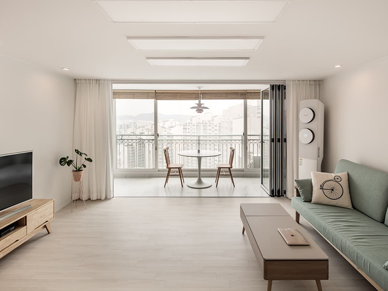
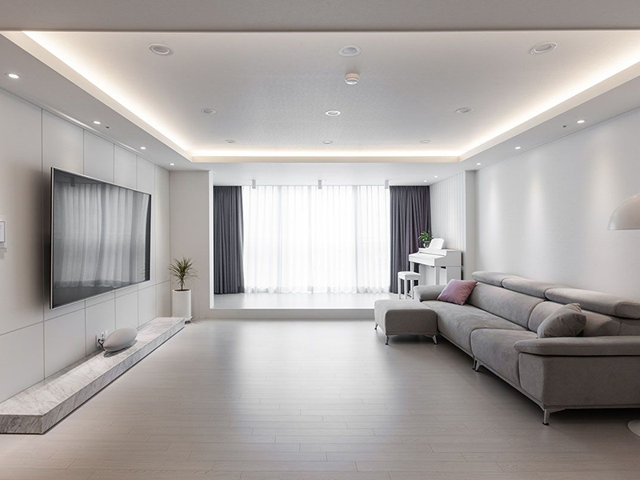
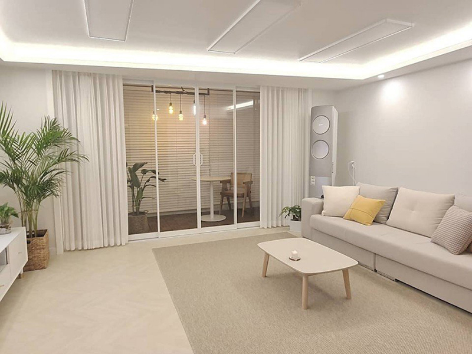
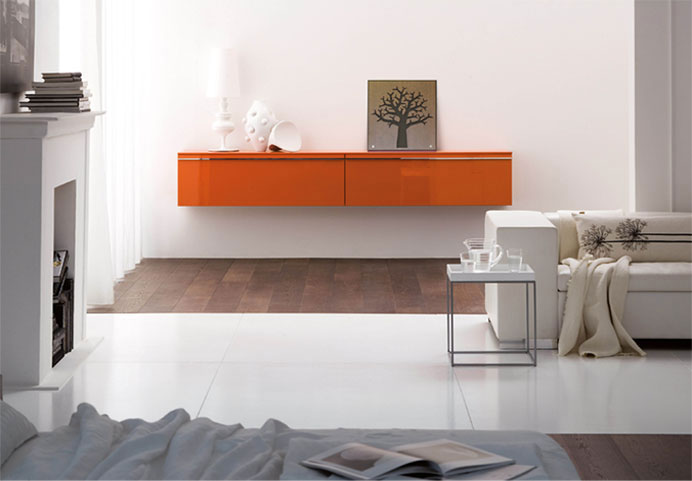
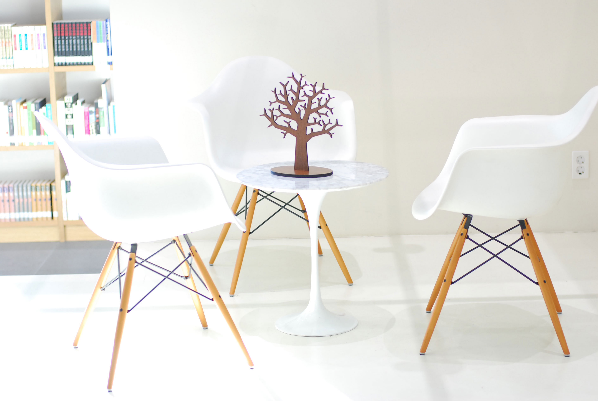
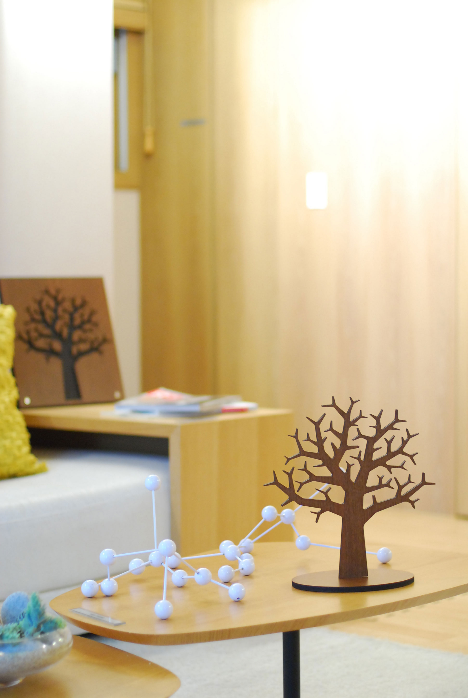
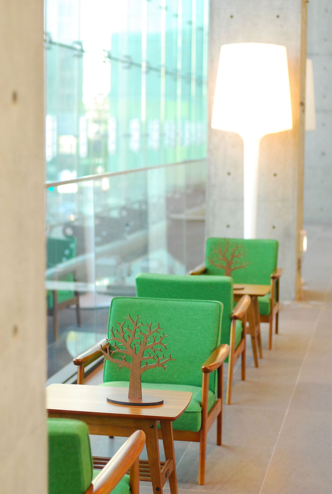
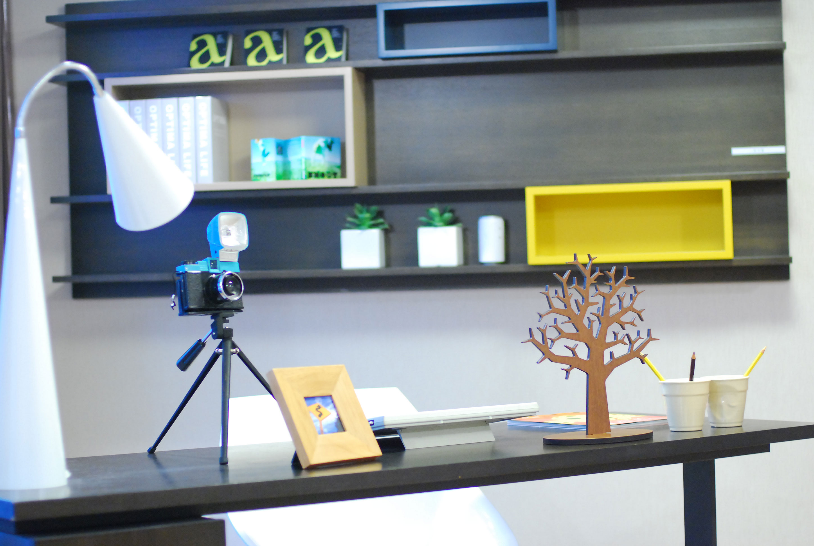

Web Design
Digital
Academy
Section_Title_#01



Section_Title_#02

The Quiet Rhythm of a City Waking Before the Morning Light
Before the streets become crowded, the city moves in a slower and softer rhythm. Delivery trucks stop beside small cafés, lights appear behind apartment windows, and the first trains begin to cross the bridges. A few people walk quickly with coffee in their hands, while others simply enjoy the silence. For a short moment, everything feels calm, unfinished, and full of possibility.

Small Changes Can Create Unexpected Results in Everyday Life
People often believe that meaningful progress requires a dramatic decision, but small changes can be surprisingly powerful. Reading ten pages each day, organizing a desk before work, or taking a short walk after dinner may seem unimportant at first. Over time, however, these simple actions become habits. They slowly influence our mood, productivity, health, and the way we approach new challenges.
Section_Title_#03
-

Exploring New Places Without Knowing Exactly Where to Go Next
Travel becomes more interesting when every detail is not planned in advance. Walking through an unfamiliar neighborhood, entering a small local restaurant, or following a road simply because it looks interesting can create memorable experiences. Unexpected conversations and quiet streets often become more meaningful than famous attractions. Sometimes, getting slightly lost is the easiest way to discover something completely new.
-

Why Ordinary Moments Often Become Our Most Valuable Memories
The memories we keep are not always connected to important events or special celebrations. Sometimes they come from an ordinary afternoon, a familiar song playing in the background, or a short conversation with someone we care about. These moments may seem insignificant while they are happening, yet years later they can return with surprising clarity. Everyday experiences often become meaningful only after time has passed.
-

A Different Perspective Can Completely Change the Same Situation
Two people can experience the same event and remember it in completely different ways. One person may focus on the difficulty, while another notices an opportunity hidden inside the problem. Perspective does not always change reality, but it can change how we react to it. By looking at a situation from another angle, we may discover solutions, ideas, or possibilities that were previously difficult to recognize.